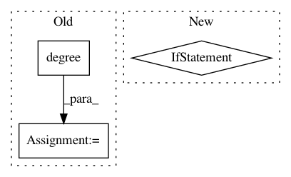

e911d269b0af4ff6d541c082ad78168d6d6a0e49,gb/disambiguation/disambiguate.py,,disambiguate,#Any#Any#Any#Any#,62
Before Change
best = candidate
best_degree = hg.degree(candidate)
elif prob == min_prob:
deg = hg.degree(candidate)
if deg > best_degree:
best = candidate
best_degree = deg
After Change
for candidate in candidates:
cm = candidate_metrics(hg, candidate, bag_of_words, exclude)
// print("%s %s" % (candidate, cm))
if cm.better_than(best_cm):
best_cm = cm
best = candidate
return best, best_cm
if __name__ == "__main__":
In pattern: SUPERPATTERN
Frequency: 3
Non-data size: 3
Instances
Project Name: graphbrain/graphbrain
Commit Name: e911d269b0af4ff6d541c082ad78168d6d6a0e49
Time: 2017-03-04
Author: telmo@telmomenezes.net
File Name: gb/disambiguation/disambiguate.py
Class Name:
Method Name: disambiguate
Project Name: rusty1s/pytorch_geometric
Commit Name: 46887e49fe301323e82a258a8063db846ac63339
Time: 2018-11-16
Author: matthias.fey@tu-dortmund.de
File Name: torch_geometric/nn/prop/gcn_prop.py
Class Name: GCNProp
Method Name: forward
Project Name: rusty1s/pytorch_geometric
Commit Name: f8c40c1d576bc4e1c4edd51b288a7e398b37f5ce
Time: 2018-12-12
Author: matthias.fey@tu-dortmund.de
File Name: torch_geometric/nn/conv/graph_conv.py
Class Name: GraphConv
Method Name: forward